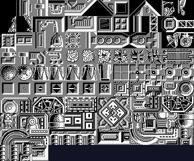
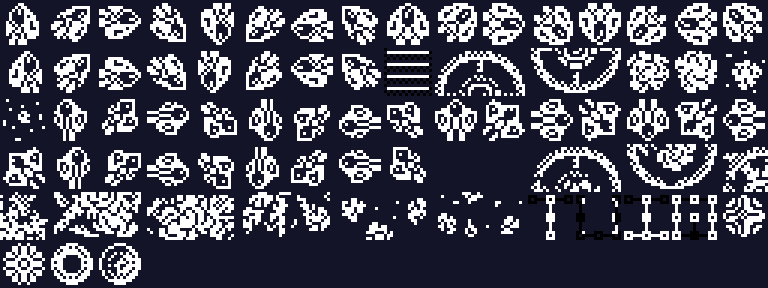
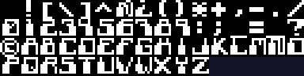
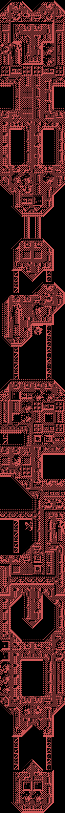
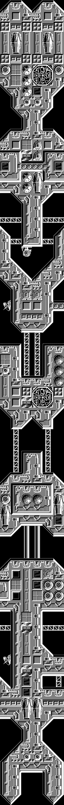
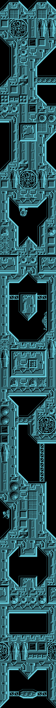
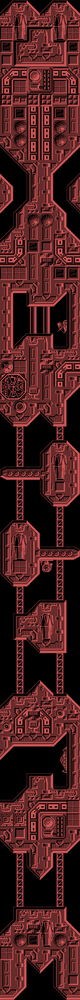
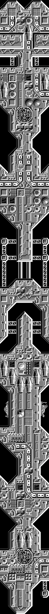
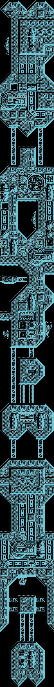
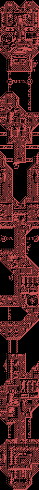

Stardust es un matamarcianos de scroll vertical. Se pilota una nave —el Astrohunter— sobre la superficie de una flota de supercruceros enemigos que va camino de la Tierra, esquivando o destruyendo lo que sale al paso hasta llegar a los generadores de escudo.
Y luego cambia de juego. Al superar la última zona de naves, el protagonista aterriza y sigue a pie, y esa es la fase final.
Nada de lo que hay aquí son capturas: todo está dibujado a partir de los bytes del binario, con la geometría que usa el propio juego. Eso es lo que lo convierte en una comprobación y no en una ilustración: si el reparto del bloque estuviera mal, saldría ruido.

Ocupan de 0x6DE0 a 0xA55F y son de 32×32 píxeles, cuatro bytes por línea, 128 bytes cada uno. La cuenta cierra sola: 111 × 128 = 14 208, y 0x6DE0 + 14 208 = 0xA560, que es justo donde empiezan los sprites.

De 0xA560 a 0xBA1F, 16×16 píxeles con máscara: cada línea trae los bits del dibujo y los de la máscara que dice qué píxeles son suyos. Son 64 bytes por sprite. Esa máscara no es un capricho: es lo que necesita el dibujado por software del Spectrum, que abre hueco con AND antes de pintar con OR.

59 caracteres de 8×8 en 0x6000, y los quince nodos centinela de 24×24 en 0x69A8.
Cada zona ocupa unos 250 bytes en la cinta, que no da ni de lejos para un mapa. Van comprimidos, y el esquema es bonito: un diccionario de frases recursivo. Cada byte del flujo es un token; si tiene el bit 7 a cero es un número de tile que va directo al mapa, y si lo tiene a uno los siete bits bajos indexan una frase del diccionario. Esa frase se expande llamando a la misma rutina, así que una frase puede contener otras. Es una gramática, no un copia-pega. Un 0xFF acaba el nivel.
Al expandirlos, las siete zonas dan exactamente 450 bytes. Que siete flujos distintos caigan en el mismo tamaño es la señal de que el descompresor lee bien. Y 450 = 6 × 75: el ancho no se elige, sale de que el buffer de pantalla mide 24 caracteres de ancho y cada tile mide cuatro. (Esto estuvo publicado como 10 × 45 por leer al revés los ejes del buffer; con el ancho bueno los mapas salen simétricos y con las estructuras enteras.)
Cada byte es un índice de tile, y van de 0 a 110 cuando hay exactamente 111 tiles. La zona 7 usa el 110, el último. Otra comprobación que sale sola.
El color de cada zona viene de la misma tabla que el puntero, y las siete ciclan entre tres: rojo, blanco y cian.







Se rehacen con tools/descomprime_nivel.py y tools/render_niveles.py.
La pantalla de juego lleva un marco de adornos por los cuatro lados y deja una ventana central para la acción, con la puntuación y el número de zona abajo. El marco es muy de la época y muy de Spectrum: aprovecha que los bordes no cambian para llenarlos de detalle sin coste.
Leídos del binario, tal cual están:
JOYSTICK, TECLADO, REDEFINIR TECLAS, JUGAR.JAVIER 100000, JUAN C 080000, MARTA 060000, MARIA 050000, TOPO 030000, SOFT 020000.`` CONVERSION POR CARLOS ARIAS GRAFICOS JUAN CARLOS Y JAVIER AREVALO ...ADEMAS DE... JULIO MARTIN MUSICA COMPUESTA POR GOMINOLAS BASADO EN UNA IDEA ORIGINAL JOSE MANUEL MU&OZ TOPO SOFT ``
Los gráficos siguen siendo de los hermanos Arévalo, los mismos de la versión original, lo que encaja con que el dibujo se trajera tal cual. La conversión del código, en cambio, la firma Carlos Arias. Ese & de MU&OZ no es una errata de la transcripción: es cómo la tipografía del juego codifica la eñe.
HAS CONSEGUIDO PENETRAR LAS DEFENSAS DE LA NAVE INSIGNIA / PERO LO PEOR AUN NO HA LLEGADO.